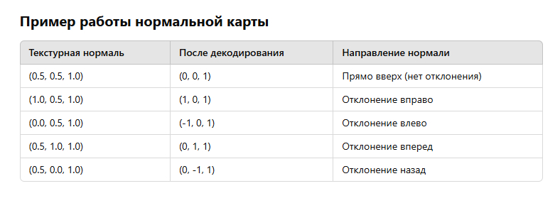

Загрузить проект расчета для VS2019 (софтверный расчет) ЗДЕСЬ
Код для OpenGL с использованием glm ниже:
#include <vector>
#include <glm/glm.hpp>
void computeTangentBasis(
// inputs
std::vector<glm::vec3> & vertices,
std::vector<glm::vec2> & uvs,
std::vector<glm::vec3> & normals,
// outputs
std::vector<glm::vec3> & tangents,
std::vector<glm::vec3> & bitangents
)
{
for (unsigned int i=0; i < vertices.size(); i+=3 )
{
// Shortcuts for vertices
glm::vec3 & v0 = vertices[i+0];
glm::vec3 & v1 = vertices[i+1];
glm::vec3 & v2 = vertices[i+2];
// Shortcuts for UVs
glm::vec2 & uv0 = uvs[i+0];
glm::vec2 & uv1 = uvs[i+1];
glm::vec2 & uv2 = uvs[i+2];
// Edges of the triangle : postion delta
glm::vec3 deltaPos1 = v1-v0;
glm::vec3 deltaPos2 = v2-v0;
// UV delta
glm::vec2 deltaUV1 = uv1-uv0;
glm::vec2 deltaUV2 = uv2-uv0;
float r = 1.0f / (deltaUV1.x * deltaUV2.y - deltaUV1.y * deltaUV2.x);
glm::vec3 tangent = (deltaPos1 * deltaUV2.y - deltaPos2 * deltaUV1.y)*r;
glm::vec3 bitangent = (deltaPos2 * deltaUV1.x - deltaPos1 * deltaUV2.x)*r;
// Set the same tangent for all three vertices of the triangle.
// They will be merged later, in vboindexer.cpp
tangents.push_back(tangent);
tangents.push_back(tangent);
tangents.push_back(tangent);
// Same thing for binormals
bitangents.push_back(bitangent);
bitangents.push_back(bitangent);
bitangents.push_back(bitangent);
}
for (unsigned int i=0; i < vertices.size(); i+=1 )
{
glm::vec3 & n = normals[i];
glm::vec3 & t = tangents[i];
glm::vec3 & b = bitangents[i];
// Gram-Schmidt orthogonalize
t = glm::normalize(t - n * glm::dot(n, t));
// Calculate handedness
if (glm::dot(glm::cross(n, t), b) < 0.0f){
t = t * -1.0f;
}
}
}
Матрица TBN (Tangent, Binormal, Normal) — это матрица, которая используется в normal mapping для преобразования нормали текстуры в мировые координаты объекта. Эта матрица позволяет вычислять нормали, соответствующие изменению угла поверхности (например, на модели с нормалями, полученными из текстуры), что важно для корректного освещения.
В normal mapping мы используем текстуру, в которой хранятся нормали, которые являются отклонениями от стандартных нормалей модели. Эти нормали (хранящиеся в текстуре) заданы в локальных координатах текстуры (или в пространстве текстуры). Для корректного вычисления освещения эти нормали должны быть преобразованы в мировое пространство или в пространство объекта.
Когда у вас есть нормаль, полученная из нормальной карты (normal map), она будет в локальных координатах текстуры. Для того чтобы правильно использовать эту нормаль в расчете освещения в мировом пространстве, нужно умножить нормаль текстуры на матрицу TBN.
Применение TBN матрицы в освещении:
Таким образом, независимо от положения и поворота объекта, матрица TBN корректно преобразует нормали, благодаря чему эффект освещения с использованием normal mapping всегда будет корректным.
Когда говорится, что нормаль из normal map (или любая другая информация) находится в пространстве текстуры, это означает, что значения нормалей, хранящиеся в текстуре, представлены относительно координат текстуры, а не в мировом или объектном пространстве.
Пространство текстуры — это система координат, в которой текстуры применяются к поверхности 3D-объекта. В этом пространстве:
Когда нормали хранятся в normal map, они обычно записываются как RGB-значения пикселей:
Однако эти нормали заданы в локальных координатах текстуры, что означает, что они находятся в пределах самой текстуры, которая привязана к поверхности 3D-объекта.
Чтобы использовать нормали из normal map в расчетах освещения или в других операциях, необходимо преобразовать эти нормали в реальные мировые или объектные координаты. Это как раз и делает матрица TBN. Она преобразует нормали из пространства текстуры в нужное вам пространство (например, мировое или объектное).
В пространстве текстуры нормали находятся в 2D системе координат. Для применения их в 3D пространстве нужно провести трансформацию, используя TBN матрицу, чтобы привести нормали в 3D систему координат и учесть ориентацию объекта на сцене.
В normal map каждая текстура состоит из пикселей (или texels), и каждый пиксель хранит информацию о нормали. Эта информация обычно представлена через каналы RGB:
Каждое значение канала (красный, зеленый или синий) варьируется от 0 до 255 (или от 0.0 до 1.0 при нормализации). Эти значения представляют собой координаты нормали в пространстве текстуры.
Почему нормали представлены через RGB?
Каждая компонент нормали в normal map представляет собой отклонение от стандартной нормали, которая в объектном пространстве обычно будет (0, 0, 1) (вектор, направленный по оси Z).
Для нормалей, хранящихся в normal map, их компоненты должны быть преобразованы в диапазон от -1 до 1, потому что стандартная нормаль (0, 0, 1) в объектном пространстве соответствует значению (0.5, 0.5, 1.0) в текстуре, то есть:
Пример: Если взять нормаль, представленную как (0, 0, 1), то в normal map это будет представлено как (0.5, 0.5, 1.0). Однако если нормаль отклоняется в сторону (например, вектор нормали будет (0, 1, 0)), то соответствующие значения в нормальной карте могут быть (0.5, 1.0, 0.5).
Нормали в normal map содержат отклонения от стандартной нормали (0, 0, 1), которая направлена вдоль оси Z в пространстве объекта. Эти отклонения выражаются через значения в каналах RGB текстуры.
Стандартная нормаль (0, 0, 1): Предположим, что на модели в 3D-пространстве у нас есть стандартная нормаль, которая направлена вдоль оси Z, то есть (0, 0, 1). Это нормаль, которая используется для исходной поверхности до применения нормальных карт.
В normal map нормали представлены в виде значений в пределах диапазона от 0 до 1 (или от 0 до 255, если речь идет о цвете в пикселях), и эти значения отображают отклонения от исходной нормали (0, 0, 1).
Однако эти отклонения представлены в диапазоне от 0 до 1. Для того чтобы отклонения могли варьироваться от -1 до +1 (что соответствует реальным отклонениям нормали в 3D-пространстве), нужно провести преобразование:
Если в текстуре normal map для пикселя значения каналов RGB равны (0.5, 0.5, 1.0), это будет означать, что нормаль на этой точке:
Значения, полученные из normal map, интерпретируются как отклонения от стандартной нормали (0, 0, 1) и затем нормализуются в диапазоне от -1 до +1 (вместо от 0 до 1) с помощью простого преобразования:
После этого нормаль будет представлена как отклонение от стандартной (0, 0, 1), что позволяет точно воспроизводить эффекты освещения на модели.
Матрица TBN выполняет преобразование координат нормали из локального пространства текстуры в мировое или объектное пространство.
Вот основные шаги:
X = (R - 0.5) * 2
Y = (G - 0.5) * 2
Z = (B - 0.5) * 2
TBN = [T.x T.y T.z]
[B.x B.y B.z]
[N.x N.y N.z]
Где:
T — тангенциальный вектор,
B — бинормальный вектор,
N — нормаль объекта.
TBN матрица преобразует нормаль из локального пространства текстуры в мировое или объектное пространство. Преобразование (R - 0.5) * 2 выполняется отдельно на этапе извлечения нормали из текстуры, перед применением матрицы TBN.
Матрица TBN (Tangent, Binormal, Normal) напрямую зависит от ориентации модели в мировом пространстве. Однако TBN не складывается непосредственно из углов поворота модели или данных из матрицы мира. Вместо этого TBN матрица создается с учетом локальной геометрии объекта, включая данные, такие как направление тангенса, бинормали и нормали для каждой вершины.
Для каждой вершины 3D-модели нужно вычислить эти направления (T, B, N), и уже на основе этих данных строится TBN матрица. После этого матрица TBN используется для преобразования нормали из пространства текстуры в нужную систему координат, например, в мировое или объектное пространство, с учетом поворота и ориентации объекта.
В самой матрице TBN не содержатся данные о положении, масштабе или вращении модели в мировом пространстве. Однако, после того как матрица TBN готова для каждой вершины, её можно дополнительно умножить на матрицу трансформации модели (матрицу мира) для учета трансформации (положения, поворота и масштаба) объекта в мировом пространстве.
1. Вычисление TBN матрицы для каждой вершины: Для каждой вершины 3D-модели вычисляется своя собственная матрица TBN (Tangent, Binormal, Normal). Эти векторы (тангенс, бинормаль и нормаль) основаны на геометрии поверхности в локальных координатах объекта, то есть в пространстве, где вершины объекта описаны относительно локальной системы координат.
Нормаль (N) для каждой вершины обычно либо заранее задается (например, для плоской поверхности), либо вычисляется на основе соседних вершин (например, из нормалей граней).
Тангенс (T) и бинормаль (B) вычисляются для каждой вершины в зависимости от её UV-координат. Тангенс указывает, в каком направлении будет "растягиваться" текстура, а бинормаль перпендикулярен как нормали, так и тангенсу. Например, бинормаль вычисляется как векторное произведение нормали (N) и тангенса (T).
Для каждой вершины, таким образом, мы получаем 3 вектора: тангенс (T), бинормаль (B) и нормаль (N). Из этих векторов формируется матрица TBN.
2. Передача данных в шейдер: Когда модель рендерится, информация о TBN матрице и нормале передается в вершинный шейдер. На этом этапе шейдер получает:
Шейдер на основе этих данных вычисляет TBN матрицу для каждой вершины.
3. Использование TBN для нормалей из нормальной карты: В фрагментном шейдере (или пиксельном шейдере) для расчета освещения нужно использовать нормали из normal map. Эти нормали хранятся в текстуре, и они представлены в пространстве текстуры. Они обычно кодируются в RGB каналах нормальной карты, где каждый канал соответствует компоненте нормали в пространстве текстуры. Но эти нормали нужно преобразовать в мировое (или объектное) пространство, чтобы они корректно взаимодействовали с освещением. Для этого: Сначала нормаль из normal map извлекается из текстуры. Затем нормаль преобразуется из пространства текстуры в локальное пространство объекта с помощью матрицы TBN:
Normal_local = TBN * Normal_texture
где Normal_texture — это нормаль, полученная из текстуры normal map (которая обычно в диапазоне [0, 1] и преобразуется в диапазон [-1, 1] перед использованием).
4. Преобразование в мировое пространство: После преобразования нормали в локальные координаты объекта, можно использовать матрицу мира, чтобы перевести её в мировое пространство. Этот шаг уже нужен, если объект подвергался трансформациям (поворот, масштаб и т.д.) в сцене.
Для каждой вершины вычисляется своя TBN матрица на основе нормали вершины и её UV-координат. В шейдере эта матрица используется для преобразования нормалей, хранящихся в normal map (которые изначально находятся в пространстве текстуры), в локальные координаты. Вершинный шейдер передает данные о нормалях, а затем фрагментный шейдер использует преобразованные нормали для вычислений освещения.
В контексте вычисления тангенса и бинормали для треугольника в 3D-графике:
Когда мы используем тангенс, бинормаль и нормаль (tangent, bitangent, normal), мы фактически создаём систему координат для каждой вершины в 3D пространстве, которая соответствует плоскости текстуры. Это называется TBN-матрицей (Tangent, Bitangent, Normal). С помощью этой системы координат можно переводить текстурные координаты (2D) в 3D координаты (или наоборот), что полезно для работы с нормальными картами (normal maps) и другими видами текстурных эффектов. При помощи tangent binormal normal координаты текстуры 2D переводятся 3D координаты.
Пример с кубом и нормальной картой:
Так что, в случае с нормальной картой, мы не можем просто умножить нормаль из текстуры на мировую матрицу поворота, потому что текстурные нормали ориентированы в локальной системе координат (поверхности объекта). Система TBN позволяет правильно преобразовать эти локальные нормали в глобальные координаты, учитывая ориентацию поверхности и положение объекта в мировом пространстве. Это и есть причина, почему TBN необходима для правильного использования нормальных карт в 3D-графике. Если бы мы игнорировали TBN и просто умножал нормаль на мировую матрицу, это бы привело к неправильным расчетам освещенности, так как нормали из текстуры не учитывали бы ориентацию поверхности в мировом пространстве.
Обычные нормали модели (геометрические нормали)
1. Глобальные нормали объекта: Обычные нормали (или геометрические нормали) объекта — это нормали, связанные с вершинами 3D-модели. Они определяют, в каком направлении ориентирована поверхность объекта в мировом пространстве. Эти нормали хранятся в глобальной системе координат. Если модель поворачивается или трансформируется, эти нормали также меняются в соответствии с изменениями положения объекта.
2. Они используются для освещенности и расчета теней: Обычные нормали обычно используются для расчетов освещенности (например, для вычисления угла между нормалью поверхности и направлением на источник света), расчетов теней, отражений и прочего. Эти нормали направлены по нормали поверхности каждой вершины, и их задача — правильно ориентировать освещение и взаимодействие с поверхностью.
3. Пример: Если у нас есть куб, то нормаль каждой его грани будет указывать в сторону одной из осей (например, нормаль верхней грани может быть направлена вдоль оси Z).
Нормали из карты нормалей (Normal Map)
1. Локальные нормали: Нормальные карты (normal maps) содержат локальные нормали, которые хранятся в текстурных координатах (например, в координатах UV), а не в глобальном пространстве. Эти нормали задают изменения в ориентации поверхности на маленьком уровне (в каждом пикселе или фрагменте) на основе текстуры, а не для всех вершин модели. Нормали в нормальной карте фактически задают отклонения от обычной нормали поверхности. Они используются для детализированного изменения поверхности модели, чтобы создать эффект более сложной геометрии, чем она есть на самом деле (например, в случае с обычным кубом можно создать эффект бугров и деталей, но без изменения самой геометрии объекта).
2. Координаты нормалей в нормальной карте: - Нормали в нормальной карте обычно представлены в RGB-формате, где: R (красный канал) контролирует отклонение в направлении оси X. G (зеленый канал) контролирует отклонение в направлении оси Y. B (синий канал) контролирует отклонение в направлении оси Z. Эти нормали обычно нормализованы в диапазоне от -1 до 1. Однако значения RGB обычно хранятся в диапазоне от 0 до 1, поэтому их нужно интерпретировать как нормализованные значения в диапазоне от -1 до 1 (например, RGB(0, 0, 1) — это нормаль, которая направлена вдоль оси Z, а RGB(0.5, 0.5, 1) — это нормаль, слегка отклоненная от оси Z).
3. Использование для детализированного освещения: Нормальные карты используют эти локальные нормали для того, чтобы передать детали освещенности и эффекты микрорельефа, создавая впечатление, что на поверхности есть маленькие детали (например, трещины, выступы и ямки), но при этом саму геометрию объекта не нужно изменять.Это дает возможность значительно улучшить визуализацию без изменения самих вершин объекта (например, можно сделать модель, которая выглядит как сложная с высокой детализацией, но на самом деле имеет малое количество полигонов).
В чем же различие?
1. Глобальная vs локальная система координат: Обычные нормали модели хранят информацию о том, как поверхность модели ориентирована в мировом пространстве. Нормали из карты нормалей хранят информацию о том, как поверхность будет поворачиваться на уровне пикселей или фрагментов, относительно локальных координат объекта.
2. Геометрия vs детализация: Обычные нормали являются частью самой геометрии модели и используются для расчета освещенности и взаимодействий с внешним миром. Нормальные карты добавляют детализацию и улучшают освещение за счет изменения направления нормали на уровне поверхности, без фактического изменения геометрии модели.
3. Использование матрицы TBN: Когда ты используешь нормальные карты, то нормали, представленные в текстуре, находятся в локальной системе координат поверхности, и для их корректного применения в глобальном пространстве нужно использовать матрицу TBN (тангенс, бинормаль, нормаль). Это преобразует локальные нормали в глобальные, чтобы они корректно взаимодействовали с освещением в мировой системе координат. Обычные нормали модели уже находятся в глобальной системе координат, и они не нуждаются в таком преобразовании.
Пример: Куб и нормальная карта
1. Обычные нормали для куба: Нормали вершин куба будут направлены строго вдоль осей XYZ, то есть для каждой грани будет своя нормаль (например, для верхней грани куба нормаль будет (0, 0, 1)).
2. Нормальная карта для куба: Если ты добавишь нормальную карту, она будет содержать информацию о том, как должны изменяться локальные нормали на поверхности куба (например, немного "выгибать" или "вдавливать" поверхность), создавая видимость более сложной поверхности. Эти изменения будут происходить на уровне каждого пикселя или фрагмента, но геометрия куба не изменится. Нормали из нормальной карты будут направлены в локальной системе координат для каждого фрагмента, и для правильного освещения ты должен преобразовать их в глобальную систему координат с помощью TBN.
Обычные нормали — это нормали, связанные с самой геометрией объекта, и они указывают направление поверхности в мировом пространстве. Нормали из нормальной карты — это локальные нормали, которые добавляют дополнительную детализацию поверхности, но сами не изменяют геометрию объекта. Чтобы правильно использовать эти нормали в 3D, нужно преобразовывать их из локальной системы координат (поверхности) в глобальную систему координат с помощью системы TBN.
Таким образом, разница между обычными нормалями и нормалями из нормальной карты заключается не только в их происхождении (геометрия против текстуры), но и в их системе координат и назначении.
Нормальная карта хранит разницу или отклонения от базовой (или глобальной) нормали. Эти отклонения показывают, как нормаль на каждой точке поверхности изменяется по сравнению с тем, что было бы в случае использования простой геометрической формы без дополнительных деталей.
Как это работает: Глобальная нормаль — это нормаль, которая характеризует ориентацию объекта в пространстве, например, для плоской поверхности она может быть (0.0,0.0,1.0). Нормальная карта содержит отклонения нормали, которые задаются на основе текстурных координат. Эти отклонения могут быть выражены через изменения вектора нормали по осям X,Y,Z в каждой точке, что и хранится в RGB-каналах карты.
В чем отличие от обычных нормалей? Обычные нормали — это глобальные нормали, которые определяют ориентацию поверхности объекта в пространстве. Нормальная карта, в свою очередь, хранит локальные отклонения нормалей на поверхности от этого глобального направления. Именно благодаря этим отклонениям мы можем имитировать более сложные и детализированные формы (например, бугорки, впадины или другие микрорельефы) без изменения геометрии объекта.
Правильное объяснение "сдвига".
Нормальная карта не просто содержит нормаль, а хранит ОТКЛОНЕНИЕ от исходной геометрической нормали.
В тангенциальном пространстве изначальная нормаль (до применения текстуры) — это (0,0,1). Нормальная карта задает отклонение от этого значения. Если нормаль в текстуре равна (0.5, 0.5, 1.0), то после декодирования это даст (0,0,1) — значит, нормаль не отклоняется. Если текстурная нормаль, например, (1,0.5,1), то после декодирования это будет (1,0,1) — нормаль будет наклонена вправо.
Нормальная карта хранит отклонения от (0,0,1), поэтому в ней всегда Z > 0.5, чтобы избежать перевернутых нормалей.
То есть нормальная карта хранит отклонения от вектора 0,0,1. Главная идея нормальной карты - Нормальная карта хранит отклонения от базовой нормали (0,0,1) в тангенциальном пространстве.
Почему именно (0,0,1)?
В тангенциальном пространстве: Изначально нормаль каждой точки считается (0,0,1) — то есть, направлена вверх. Нормальная карта содержит отклонения от этого направления, закодированные в цветах текстуры. Другими словами, если в нормальной карте пиксель (0.5, 0.5, 1.0), то нормаль не отклоняется. Если же, например, (1, 0.5, 1.0), то нормаль наклонена в сторону X.
Нормальная карта не хранит абсолютные нормали, а только изменения относительно (0,0,1). Чтобы использовать её правильно, надо преобразовать значения из [0,1] в [-1,1]. После этого нормаль переводится из тангенциального пространства в мировое с помощью матрицы TBN.
Нормальная картах хранит изменения относительно базовой нормали (0,0,1). Например у нас после декодирования нормаль из текстуры равна (0,0,0.1) это не значит что к (0,0,1) надо добавить (0,0,0.1) и мы получим нормаль, нет (0,0,0.1) это не разница которую нужно добавить к базовой нормали (0,0,1) - а (0,0,0.1) это уже есть нормаль, но относительно базовой нормали (0,0,1).
Нормаль из текстуры — это уже финальный вектор.
Например, если после декодирования у нас (0,0,0.1), то это уже есть нормаль в тангенциальном пространстве. Не надо добавлять это значение к (0,0,1). Вектор (0,0,0.1) уже полностью заменяет исходную нормаль.
Текстурная нормаль (уже готовый вектор) домножается на матрицу TBN. Получается нормаль в мировом пространстве, которую можно использовать в освещении.
Таким образом, текстурная нормаль уже содержит правильное направление, просто в другом пространстве.
К примеру у вас на экране горизонтальная плоскость, то есть нормаль к такой плоскости направлена вверх (0,1,0). Мы на базе этой нормали и позиции вершины создаем матрицу TBN. Далее мы извлекаем из текстуры нормаль - (0,0,1) в тангенциальном пространстве она направлена вверх, но в мировом пространстве эта нормаль из текстуры направлена в сторону +Z. Теперь мы умножаем (0,0,1) нормаль из текстуры на эту матрицу TBN и результирующая нормаль становится такой как нам надо (0,1,0) - то есть матрица TBN поворачивает нормаль из текстуры в нужном направлении.
Исходная поверхность - Горизонтальная плоскость → нормаль в мировом пространстве: (0,1,0). Создаём матрицу TBN на основе этой нормали.
Нормаль из текстуры - В нормальной карте стандартное значение "без отклонений" — (0,0,1). Это означает, что в тангенциальном пространстве нормаль смотрит вверх (по оси +Z в TBN-пространстве).
Умножение на TBN - Матрица TBN поворачивает нормаль из текстуры в мировое пространство. Для горизонтальной поверхности, где исходная нормаль (0,1,0), TBN повернёт вектор (0,0,1) так, чтобы он соответствовал этой нормали. В результате после умножения нормаль из текстуры (0,0,1) превращается в (0,1,0) в мировом пространстве.